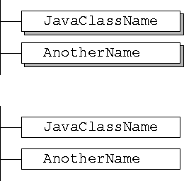

In my opinion there has been a tendency over the past years to add fluff to the figures in books, just for fluff's sake. This has been driven by the simplicity of generating these figures with easy-to-use computer programs. Edward R. Tufte has written three wonderful books on the presentation and interpretation of graphical information:
Chapter 5 of the first book is titled "Chartjunk" and notes the following:
"The interior decoration of graphics generates a lot of ink that does not tell the viewer anything new. The purpose of decoration varies--to make the graphic appear more scientific and precise, to enliven the display, to give the designer an opportunity to exercise artistic skills. Regardless of its cause, it is all non-data-ink or redundant data-ink, and it is often chartjunk."
My pet peeve is the artificial shading that is added to figures, tying to add dimension, as in the following:

Personally I'll take the second design over the first. I think the names stand out more in the second design, whereas the shading in the first design detracts from the names.
Just as the easy-to-use graphics programs led to chartjunk with the normal black/white/gray figures in current books, I think we will see colorjunk as books move to CDs (basically anything in HTML format) as authors get to play with color, something they don't normally get to do with a book.
 Back to W. Richard Stevens' Home Page
Back to W. Richard Stevens' Home Page